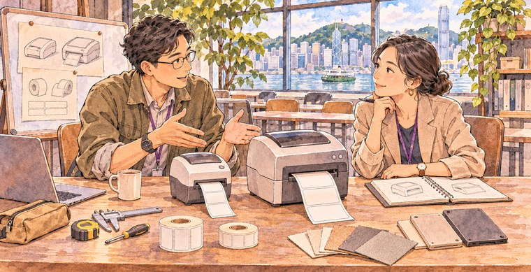

STR-26 · 香港 · 15–20分鐘 · 逆向知識轉移 · 附屬公司創新 · 可轉移性
同一款全球產品，知識只向一個方向流動？

有用的知識也可以由地區傳回總部
有關跨國企業的研究探討知識如何由海外附屬公司傳回總部，而不只看總部如何向外傳遞知識。收到設計不等於懂得運用；能否理解和調適設計，以及雙方的工作關係，都很重要。
這家設備公司是虛構的。個案旨在說明逆向知識轉移，並不聲稱任何國家天生較能產生更簡單或更好的創新成果。所有產品測試、成本、要求和預算均為虛構；個案並無為任何真實產品作認證或推薦。
課堂決定
你領導一家總部設於香港的跨國企業的產品委員會。以往由總部開發標籤打印機，再由各地區單位調適語言和包裝。這次，一個地區工程部門自行開發了一款小巧的電池供電打印機，供經常無法穩定連接網絡的流動盤點小組使用。打印機可在機內儲存已核准的標籤範本，並離線完成指定的打印工作。總部的常規型號則須連接網絡才能完成這些工作，但提供較多集中報告功能。
這款小型打印機已通過地區單位自行訂定的驗收程序，並已在當地有限度使用。集團擁有相關設計權，可以在內部共享設計。這款打印機的估計工廠成本為每部900港元，總部型號則為1,500港元。這些數字是工廠成本，並非到岸成本、售價或整個產品使用期的利潤率。在當地已投入使用，加上物料清單所列的成本較低，仍不足以證明它適合在其他地方使用。
委員會下月有十個已獲撥款的工程工作日。方案 A 把這些日子用於開發總部型號一項已列入計劃的報告功能。方案 B 則用同一批十個工作日，由地區單位與總部共同評估設計能否轉移，並進行小規模內部試行，把該功能推遲一個月。這項功能沒有合約訂明的限期，但推遲仍有機會成本。兩個方案都不構成對外推出產品、聲稱已獲認證或向客戶作出承諾的授權。眼前要決定的是，是否值得研究把這項地區發明納入集團的候選產品，而不是立即取代所有全球產品。
| 比較項目 | 總部型號 | 地區設計 |
|---|
| 指定標籤打印工作 | 須連接網絡 | 可離線操作 |
| 功能重點 | 集中報告 | 便攜及機內範本 |
| 估計工廠成本 | HK$1,500 | HK$900 |
| 在其他地區的實證 | 集團現有產品 | 尚未確立 |
為本個案編製的虛構產品比較。工廠成本較低，既不是盈利預測，也不能證明兩款產品的功能相若。
你的決定你會把十個工程工作日用於開發總部已列入計劃的功能，還是評估地區設計能否轉移？請說明總部需要掌握甚麼，不要假定成本低或在當地成功，就代表產品已可在全球推出。
第二輪 · 多了一項資料
另外兩個地區單位表示面對同一項具體限制：流動小組必須能在沒有可靠網絡連線的四小時內打印標籤。候選設計經過十二節有人監督的內部測試，在這個測試條件下，所有指定標籤均正確印出。使用者重視的是便攜和離線操作，而不只是功能較少。這些測試只涵蓋一項範圍有限的工作，由選定員工參與；它們既不是銷售實績或市場預測，也不能證明產品在所有操作條件下的表現。
初步檢視也發現有些要求尚未滿足。目的地 A 擬議的採購計劃要求就其指定的產品配置提供由獨立方面出具的書面符合性證明；現有的本地證明並不涵蓋該配置。目的地 B 則要求以當地工作語言編寫的維修指引、受過訓練的維修人員，以及在當地備存的替換零件。兩地所需的準備都未齊備。這些是個案為計劃訂明的要求，並非對任何國家法例的陳述。當地工程團隊也有一套設定及故障檢查常規，但只有部分做法有文件記錄；單靠傳送設計圖則，無法把這套做法傳給接收方。
在核實並符合目的地要求之前，不得對外推出產品。後續工程計劃、合規工作及支援的成本均未估算。已完成的十二節測試及初步檢視，都是在較早的日常工作中進行，沒有動用擬議的十個工作日。這十個工作日仍可用於內部評估；委員會須判斷現有證據是否足以支持這項資源分配，並訂明評估須交付甚麼成果。開發總部型號的功能仍是可行選項。
你的決定你會否把地區設計作為在選定市場推出的候選產品，繼續研究？請訂明由誰參與知識轉移、要做哪些測試、各目的地必須符合哪些條件，以及需要甚麼證據才能批准推出產品，而不只是再造一個原型。
扭轉學習方向，不改證據標準
解決方案由地區單位首創，總部向地區單位學習，這與企業以往由總部向地區推展開發成果的模式相反。往後若把方案轉移至其他單位，也涉及橫向擴散。策略機會在於把一個營運限制的解決方法用於其他地方，而不是把「所有較簡單的產品都應成為全球產品」當作定則。
釐清實際要轉移甚麼
可轉移的核心能力，是以便攜設備離線打印指定標籤。接收單位需要設計檔案、範本規則、設定步驟及故障診斷方法，也要明白原團隊為何作出那些取捨。原開發團隊的工程師、總部工程師及目的地的服務團隊一起工作，可找出圖則未有記載的實務技術。總部應肯定原開發團隊的貢獻，並讓接收人員親自設定設備和診斷故障，以檢驗他們是否掌握相關知識。
試行不等於推出產品
十二節測試支持就單一條件下的一項工作作進一步研究，但既未補足目的地 A 所需的符合性證明，也未備妥目的地 B 所需的支援。應指定負責人，確定目的地的適用要求及接受獨立評估的途徑；不要假定在當地通過驗收，到了別處也會獲接納。應把語言、維修培訓及零件供應的安排納入候選產品方案，而不是等到售出產品後才安排支援。
成本只是起點
兩款產品的工廠成本相差600港元，相當於總部型號工廠成本1,500港元的40%。兩款產品的功能有別，而額外的調適、符合性評估、物流、保用及支援成本均未估算。這筆節省不代表利潤率提高40%，也不足以作為商業決策的理據。作出商業決定前，先確認目標客戶的需要、支付意願，以及計及所有支援後的收益與成本。
有條件的建議
如果委員會認為了解這項共同限制的價值足以抵償推遲報告功能的代價，便選 B。用十個工作日完成各方共同議定的工作測試、由接收方主導的設定示範、尚未符合的目的地要求清單，以及列明成本的後續階段建議（如有）。交付成果應是繼續、修訂或停止的建議，而不是推出產品的批准。若接收方無法重現測試結果、無法取得所需的保證、無法提供支援，或計及所需支援後的收益與成本未能符合公司其後議定的投資準則，便應停止或重新設計。不要虛構尚未掌握的成本或需求承諾。
教師說明
首輪資源分配用3分鐘，揭示新資料用5分鐘，擬訂轉移計劃用7分鐘。如果管理人員能說明機會成本，並保留日後評估地區構思的途徑，方案 A 仍有理據。選 B 的有力答案會指出，原開發團隊的工程師是知識的提供者，而不只是把地區單位視為低成本工廠。可問學生：如果總部只複製硬件，會失去甚麼？
區分產品來自哪裏、知識往哪裏流動，以及誰有決策權。個案既不假定地區單位有自主權便必然帶來創新，也不把所有審批權交給原開發單位。與一般為出口而作的產品調適不同，這項創新源自附屬公司。避免以國籍作刻板推斷，也不要聲稱十二節成功測試或一份成本較低的零件清單就能證明全球需求。認證和採購細節均屬虛構，在現實中應用前須由合資格人士核實。
第二輪
另外兩個地區單位表示面對同一項具體限制：流動小組必須能在沒有可靠網絡連線的四小時內打印標籤。候選設計經過十二節有人監督的內部測試，在這個測試條件下，所有指定標籤均正確印出。使用者重視的是便攜和離線操作，而不只是功能較少。這些測試只涵蓋一項範圍有限的工作，由選定員工參與；它們既不是銷售實績或市場預測，也不能證明產品在所有操作條件下的表現。
初步檢視也發現有些要求尚未滿足。目的地 A 擬議的採購計劃要求就其指定的產品配置提供由獨立方面出具的書面符合性證明；現有的本地證明並不涵蓋該配置。目的地 B 則要求以當地工作語言編寫的維修指引、受過訓練的維修人員，以及在當地備存的替換零件。兩地所需的準備都未齊備。這些是個案為計劃訂明的要求，並非對任何國家法例的陳述。當地工程團隊也有一套設定及故障檢查常規，但只有部分做法有文件記錄；單靠傳送設計圖則，無法把這套做法傳給接收方。
在核實並符合目的地要求之前，不得對外推出產品。後續工程計劃、合規工作及支援的成本均未估算。已完成的十二節測試及初步檢視，都是在較早的日常工作中進行，沒有動用擬議的十個工作日。這十個工作日仍可用於內部評估；委員會須判斷現有證據是否足以支持這項資源分配，並訂明評估須交付甚麼成果。開發總部型號的功能仍是可行選項。
你的決定你會否把地區設計作為在選定市場推出的候選產品，繼續研究？請訂明由誰參與知識轉移、要做哪些測試、各目的地必須符合哪些條件，以及需要甚麼證據才能批准推出產品，而不只是再造一個原型。